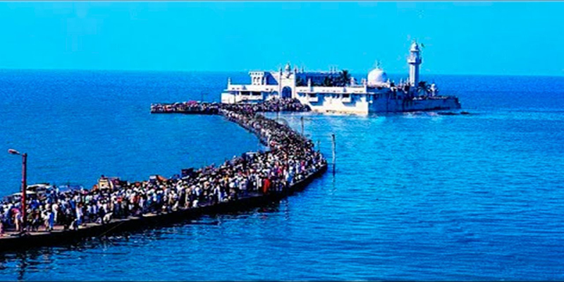
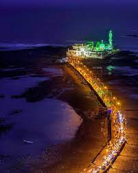
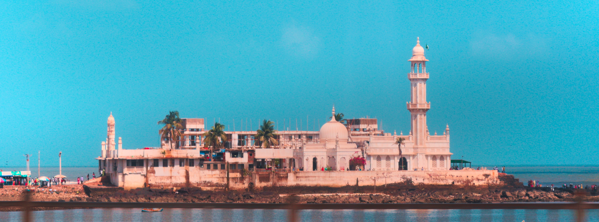
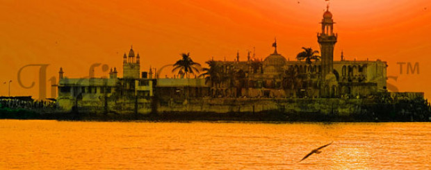

Haji Ali Dargah




🕌 Introduction
The Haji Ali Dargah is a famous religious and tourist spot located on an islet off the coast of Worli in Mumbai. It is visited by people of all faiths and is known for its serene location and Indo-Islamic architecture.
📜 History
Built in 1431, the dargah houses the tomb of Sayyed Peer Haji Ali Shah Bukhari, a wealthy merchant who gave up worldly possessions to travel to Mecca. The structure is surrounded by the sea and is accessible via a narrow causeway.
🕒 Best Time to Visit
- October to March for pleasant weather
- Weekdays for less crowd
- Low tide timings preferred
✨ Things to Experience
- Peaceful sea walk to the Dargah
- Architectural beauty of the white domes
- Spiritual atmosphere inside the shrine
- Beautiful views of the Arabian Sea